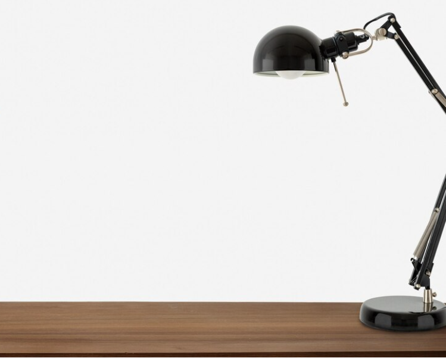
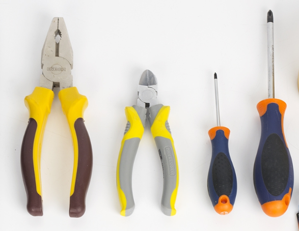

После того как вы стали счастливым обладателем всей этой кучи железа, наконец-то настало времыя собрать всё воедино. Но перед тем как это сделать стоит обустроить себе удобное рабочее место.
Во-первых вам понадобится свободный и просторный стол и освещение, например настольная лампа.
Категорически запрещается использовать в качестве поверхности для сборки тканевые поверхности! Не кладите комплектующие на диван и тому подобные поверхности!
Из инструментов нам в общем то понадобится немного: крестовая отвёртка, плоскогубцы и совсем чуть-чуть прямых рук.

Опционально можно обзавестись антистатическими перчатками, но можно обойтись и без них, просто перед тем
как брать в руки комплектующие снимите с себя статическое напряжение, взявшись за что-нибудь железное, например
батарею или корпус ПК. Помните, что риск убить железо статикой присутствует всегда. Так же следует обзавестись
стяжками для кабелей - самые удобные, на липучках, они обычно идут в комплекте с видеокартой или материнской
платой.
Теперь можете переходить непосредственно к сборке вашего ПК